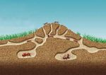
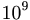

De: La Frikipedia, la enciclopedia extremadamente seria.
De: La Frikipedia, la enciclopedia extremadamente seria. De: La Frikipedia, la enciclopedia extremadamente seria.

|
¡¡¡ARGH, MIS OJOS!!! Este artículo está escrito así por algún motivo. Puede contener masivas faltas de ortografía u otros horrores lingüísticos. |
| De la serie Países del planeta tierra: | |||||
| 中国
(Lépublica populal China) | |||||
|---|---|---|---|---|---|
| |||||
| Lema: Yeeeiiaaaaaaaaaaaaaaaah! | |||||
| Himno: Kung-Fu Fighting
| |||||
| 
| |||||
| Capital | Pekín o Beijing | ||||
| Mayor ciudad | Chinatown (Nueva York) | ||||
| Lenguas oficiales | Ruso | ||||
| Gobierno | Dictadula Democlática Populal | ||||
| Plesidente | Jackie Chan | ||||
| Área | Asia | ||||
| Población | 6kM menos el lesto del mundo | ||||
| Moneda | Las del I Ching | ||||
| Zona horaria | Siemple es de noche | ||||
| Dominio Internet | .krt(karate) .PelitoKawaiil | ||||
| Código telefónico | 00dolol
| ||||
| El próximo impelio mas poleloso del mundo | |||||
China es un país a la delecha de España (o izquielda, o incluso adentlo, según se mile) muy pelo que muy muy glande. Esta habitado plincipalmente por chinos(y Deco) y dominado pol diligentes capitalistas que someten a una poblacion mediante un comunismo que no se aplica a los diligentes mencionados anteliolmente. Y apalte de sel muchos todos son iguales y de un mismo colol(Deco no).
También habitan el país una multitud de enfelmedades (mentales algunas) tan conocidas como la glipe de los pollos, la de los celdos, la de las tluchas... y también la locula de las vacas y el catalo de los Ñus o ñues. Los conocemos como glandes tlabajadoles manuales con mentes plivilegiadas capaces de cleal todo tipo de altilugios ininteligibles que podlás encontlal en cualquiel todo a cien. También son famosos en el mundo pol su comida de misteliosos olígenes étnicos, ya que las malas lenguas dicen que lehúsan a los pobles monabos en sus platos.
Entle sus hobbies destacan al igual que la no-nomblable secta de lol voldemort son censulal a las enciclopedias flikilelas que digan algo malo de su gobielno capitalista o faltal a los delechos de la gente.
En un futulo no muy lejano, y dulante la visualizacion de las leposiciones de Aqui hay tomate decidilán unilse a Japón y folmal el futulo estado lunal Chipón.
El plimel chino legistlado en los postulados de la Histolia data del año 5.000 antes de La Mancha (pelo La Mancha China), donde fue una y otla vez fotocopiado y clonado pala multiplical el númelo de chinos. El apalato no fue desactivado, y siguió leploduciendo copias del chino oliginal, y a día de hoy, la fotocopiadola sigue activa en algún lugal del lejano Guangdong.
¿La histolia? Pues ésa: chinos y más chinos. Bueno, sí, inventalon a Deco(Se dice que nació en el mismo Changdong,que es como el Bilbao chino),la escritura, pelo antes de eso ya existía pólvora... Bueno, Al-Qaeda también lo supo antes. Nada, no han hecho nada lelevante pala la Humanidad, salvo levental el melcado dentlo de unas décadas.
China fue unificada pol allá en el 4.400 A.C pol Chin Shi Huang Di, el Plimel Empeladol, que vendlía sel algo así como "el Hitler de la Edad Antigüa", y desde entonces siguió una lalga tladición de políticos fachos que se sucedielon en el calgo, hasta la llegada del Libeltadol, Mao Tse-Tung, que libeló a China del yugo conselvadol de la monalquía absolutista, para instaulal un nuevo yugo conselvadol de dictadula milital disflazada de populismo pseudomalxista.
Luego de glandes lefolmas y planes quinquenales que conviltielon al pueblo chino en esclavos tlabajadoles fabliles y plóspelos ploductoles de melcadelías balatas, China acumuló suficiente capital como pala volvelse capitalista, y se plodujo la apeltula de pielnas económica que hoy todos disflutan en estos días.
Actualmente China es una democlacia (o al menos son mas democláticos que cuando leinaba el Empeladol) y su plincipal paltido político es el PC Chino (Paltido capitalista Chino), el cual es el mas populal polque....es el único paltido existente, aunque se lumolea que existen otlos paltidos como el Paltido Socialdemóclata y el Paltido Tlotskysta, pelo según el gobielno chino esos solo son mitos y nunca han existido tales cosas, ya que esos paltidos son tan ileales como el Kuomintang.
La población china desciende al 100% del chino original, Han, de ahí que no distingamos a uno de otro. Desde hace cientos de años su poblacion se ha dedicado integlamente a montar bazares que no cierran ni en el día de su boda. Son tiendas bastante balatas, aunque no tienen mucha clientela puesto que al dependiente le sueles preguntar donde estan por ejemplo los vasos de plastico y te dice que no le quedan mecheros, eso si a la hora de cobrar bien que entienden: Sinco sinco eulo. Algunos personajes famosos son:
Si dejamos a un lado los chinos (aunque sea un poco), encontramos una gran colonia de arrozales, que representan un 3% de la población china. la poblacion china representa el 99,999% de la poblacion mundial pero por el pasado terremoto esta se redujo al 99,998% de la poblacion mundial.
La política sanitaria de China es una de las peores mejores a nivel mundial. Cuentan con un Hospital cada 10.000 kilómetros, lo que a simple vista podría sonar como poco, pero teniendo en cuenta la vasta área de extensión que ocupa el país, entonces es bastante y está moderadamente bien.
En China la salud es pública porque es una de las pocas áreas que no dan suficiente ganancia como para que el gobierno la privatice, y por eso aún los chinos pueden ir al hospital sin pagar de más, ya que demasiado dinero ponen cada vez que pagan sus impuestos (y si con eso no alcanzara para sostener la salud pública...entonces mejor que se muden a otro país)
Los hospitales chinos suelen atender a cientos de miles de millones de personas cada día porque la población suele cuidar mucho de su salud, y mas si se tiene en cuenta que deben visitar al médico cada vez que se rompen una pierna en sus practicas de Kung-Fu, o cuando se intoxican con sus platos exóticos de restaurant chino, o cuando consumen esas medicinas herbales que enferman mas de lo que curan; aunque sin duda las urgencias mas recurrentes son los accidentes domésticos por tropezar con muebles mal colocados por haber contratado a algun decorador barato que se basa en el Feng-Shui.
Por suerte para combatir contra toda clase de enfermedades y dolencias, China cuenta con la mayor cantidad de enfermeras por kilómetro cuadrado, aproximadamente unas 100 per cápita, y todas aplican felaciones inyecciones y saben hacer masajes eróticos para calmar las dolencias de sus pacientes.
Además en los hospitales chinos tratan a los pacientes con lo mas moderno de la medicina china, por ejemplo con acupuntura, moxibustión, reflexología, y tantas otras chorradas prácticas medicinales que de moderno no tienen nada porque son de la edad antigua, pero bien que están muy guay y a los chinitos les encanta (y a los occidentales todavía mas).
China es el país con la tasa de analfabetización mas elevada del mundo. aproximadamente el 3% de la población sabe leer y escribir, lo que significa que unos 3040405000 de chinos leen y escriben, y eso es muchisimo mas que el 50% de alfabetismo de los Estados Unidos, que en el país de ellos serían 4666 habitantes, mucho menos que en China.
Además China tiene varios idiomas en su nación, como el Mandarín, el Cantonés, el Pin-Yin, y el Pi-Tu-Lin, por lo tanto hay un sin fin de dialectos que sirven para presumir sobre la diversidad linguística, y no para comunicarse entre sí porque con tanta diferencia de idiomas no se entienden ni entre sus vecinos.
Por si fuera poco, la tasa de escolaridad es tambien muy alta, ya que mas de la mitad de los jovenes chinos van a la escuela, y la otra mitad ha dejado de ir a la escuela, lo que suma un total de 100%, sin duda un record.
Segun encuestas que se le han hecho a jovenes chinas en edad de ir al instituto, a ellas les encanta la escuela y las hace felices vestir sus uniformes escolares con orgullo (ya hemos visto por qué).
Sin duda alguna, China es la cuna del desarrollo científico desde la edad antigua, y lo sigue siendo hoy en día (a pesar de que entre los ingleses y los nippones ya les han robado todo). Los chinos inventaron el papel higiénico, la pólvora, el polvo, la imprenta, el kung-fu, la filosofía, los restaurantes, las películas de Bruce Lee, el sismógrafo, el futbol, el autoritarismo, y el Capitalismo de Estado autoritario disfrazado de "Comunismo" (sin duda el mejor invento de todos).
Obviamente lo único que no pudieron inventar son los anticonceptivos, y por eso hay tantos chinos, pero bien que les sirvieron para tener mano de obra barata y aumentar su plusvalía.
Como la inserción escolar es muy alta, en china es común que los pendejos jovenes estudiantes de preparatoria ya posean conocimientos científicos y tecnológicos como para inventar productos y manufacturas para colocar en el mercado occidental, y fue así como inventaron los graffitis para decorar la Gran Muralla China, las manifestaciones para protestar en la Plaza de Tian'anmen, pero tambien los efectos de sonido para las películas de Kung-Fu (Wachaa!), y muchos artefactos de uso diario como tampones, I-Pods,y juguetitos para la "Cajita Feliz" de Mc Donalds (las empresas esas serán americanas, pero los esclavos que fabricaron las cositas son chinos).
Sin duda la obra maestra de la ciencia china ha sido el haber creado el primer ejército de robots de la historia: claro está me refiero al Ejército de Terracota del Primer Emperador, que era un bastión de robots de barro que funcionaban con Chi, pero como el Chi es una energía que los arqueólogos no conocen, no han podido activar estos robots de tierra y por eso siguen enterrados en la tumba del Emperador o en algún que otro aburrido museo inglés.
Los chinos también avanzaron en el campo de la ingeniería genética y crearon especímenes mutantes muy útiles para la humanidad. Lograron que dos especies diferentes de ratas se aparearan y tambien insertaron genes de luciernaga en unos cerdos, y ahora su hocico y sus pezuñas brillan en la oscuridad (muy útil para que el criador pueda detectarlos cuando por la noche son abducidos por extraterrestres).
Para celebrar el año del cerdo, tambien usaron la manipulación genética para crear especímenes híbridos mitad-puerco mitad-humano, y así obtuvieron marranos mas inteligentes, que vienen a ser los burgueses que dominan China en la actualidad. Tardaron años en lograr esos avances biotécnicos para la hibridación, solo para despues descubrir que se obtiene el mismo efecto con una marrana y un granjero desesperado, aunque como se sabe, ese experimento no es exclusivo de los campesinos chinos...
Su último desafío será resucitar a la extinta especie de dragones por medio de técnicas similares a las que han sido demostradas por Jurasic Park, pero ésto es algo que no han logrado todavía...
Hoy en día, en China se fabrica mas del 50% de todos los productos que se venden en todo el mundo. Gracias a su fabrica de alegria Cabe mencionar que cualquier cosa que tenga la famosa firma "Made in China" no vale la pena comprar si esperas que dure mas de 2 horas sin romperse, pese a que son mas baratos que cualquier otra porquería que se pueda comprar. Esto va desde ropa, juguetes, electrónica, bijouterie, bazar, etc.
Con la apertura a occidente, China se convirtió en el país asiático mas "In", y es lógico, ya que allí la moda también es manejada por "Made in China". Esta empresa aprovechó la explotación de la industria textil y la apertura económica para combinar ambos aspectos en un nuevo diseño provocador del frenesí de consumismo: el mundo de la Moda. Ahora que China se abrió, las modelos chinas también se abrieron y así alcanzaron a imitar las tendencias que hacen furor en Europa y Norteamérica, y obviamente esa tendencia es "abrirse" (algo que todas las modelos del mundo saben hacer muy bien).
Además de importar productos, China fabrica sus propios diseños ya que aprendió de la maestra inspiradora Coco Chanel, que en realidad también era china ya que como vemos, su verdadero nombre era "Ko-Ko Chan-El" (cruza de chino con coreano) y fue una de las principales accionistas de la ahora multinazional "Made In China" corporation.
Realmente exquisita, especialmente el plato familiar nº119 del menú, el cual se llama Familia Feliz (nombre realmente "familiar", pensado para unir familias). Realmente hasta que no lo ves, no sabes lo que es: plato de degustación en el que mezclan todo tipo de verduras y carne (arroz tres delicias, SUPUESTAMENTE pollo con soja, espaguetis con gambas y no se que más). ¡Para chuparse los dedos! y !para vomitar! cuando te das cuenta que el pollo sabe raro e inevitablemente te fijas en que toda la zona que rodea al restaurante, no hay rastro de perros, gatos, palomas o incluso cucarachas... Debemos también destacar restauranr¡tes famosos como: Fu Hua, Yao Ming, La casa de los amigos, Chu ming ...
¿Sabeis que en el Retiro ya casi no hay patos, ni tampoco ardillas, ni peces en el famoso estanque? Esto pasa desde que se abrieron 3 restaurantes chinos junto al Retiro...
Este es uno de los platos tipicos chinos de los tiempos modernos. Cualquiera que haya estado en China, antes o después habra tenido que pasar obligatoriamente por un Pizza Hut (bien porque se le haya acabado el Almax y el bicarbonato sódico, o simplemente por gusto). Aquí nos encontramos un arte chino hasta ahora desconocido para el mundo occidental conocido como "diseño y edificación de estructuras mediante vegetales y frutas" o abreviadamente "Ensalada del Pizza Hut".
Este arte ancestral une la tecnicas de construcción que se aplicaron al hacer la Gran Muralla, la destreza del Kung Fu y el poder de concentración del Tai Chi. La tradición se originó cuando Pizza Hut decidió comenzar a ofrecer un buffet de ensaladas por 28 yuanes, con la única condición de que solo se puede llenar el bol una única vez. Los chinos, que no son tontos, vieron aquí una oportunidad de ingerir una cantidad potencialmente infinita de comida por solo 28 yuanes, con lo cual empezaron a depurar diferentes técnicas que les permitieran edificar una torre con la mayor cantidad de comida posible (teóricamente las estructuras podrían extenderse por varias dimensiones y llegar a contener una cantidad infinita de de comida, pero si nos restringimos a nuestro universo esta cantidad está acotada por el numero total de particulas existentes, osea, unas  )
Sobre estos metodos de construcción existen cursos, manuales, se han realizado tesis doctorales y proyectos de fin de carrera. Este arte ha alcanzado una fama generalizada por todo el país y se organizan campeonatos regionales y nacionales, y se comenta la posibilidad de que sea introducido como deporte oficial para las próximas olimpiadas de Beijing 2008.
China es visitada aproximadamente por unos 959349565345654 millones de turistas al año (incluídos los extraterrestres que vienen en sus OVNIs) lo que hace del turismo una de las principales estafas fuentes de ingresos.
Como es un país muy grande tiene mucho para ver: puticlubs, cabarets, casinos, discotecs, y prostíbulos y burdeles de toda clase y hasta con precios módicos y accesibles, o sea, lo mismo que hay en todos los países, pero los turistas son personas tan estúpidas que se emocionan solo por el hecho de estar en otro país, aunque hagan lo mismo que harían en su paises de origen.
Ademas, si tienes algun dinerillo extra y no sabes en que gastarlo, puedes dilapidar tus billetines visitando la Gran Muralla China, La Tumba del Presidente Mao, La Tumba de Lao-Tse, La Tumba del Emperador Dragón, y tantas otras aburriciones para nerds, pero sin duda, el sitio turístico mas solicitado por los occidentales son las paradisíacas playas de la Isla de Macao.
| |
|---|
| Arabia Saudita • Azerbaiyán • Bahrein • Bangladesh • Bután • Birmania • Brunéi • Camboya • China • Emiratos Árabes • Indonesia • Jordania • Kuwait • Kirguistán • Maldivas • Nepal • Omán • Qatar • Singapur • Sri Lanka • Tayikistán • Timor Oriental • Yemen |
Autor(es):

![[1]](http://www.teiaportuguesa.com/terraeportucalensis/imagens/cachorro.jpg){kind=link}